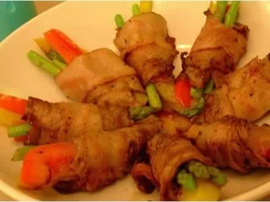
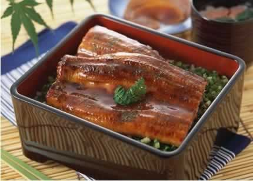

孕妇吃肉也有学问
孕早期即将结束，许多准妈妈胃口开始变好，尤其对于肉类渐渐恢复了食欲。肉类含有丰富的优质蛋白质，是我们每天所需的铁、铜、锌、镁等营养素的最好来源之一。因此，适当地食用肉类对准妈妈的身体健康和胎宝宝的成长发育都是十分必要的。不同的肉类营养价值也有所不同，准妈妈可以选择的肉类，包括鱼肉、兔肉、鸡肉与牛肉等。
鱼类含有丰富的氨基酸、卵磷脂、钾、钙、锌等微量元素，这些是胎儿发育的必要物质，尤其是神经系统。因此孕妇多吃鱼有利胎儿发育，特别是脑部神经系统。鱼肉中含有较多的不饱和脂肪酸二十碳五烯酸，二十碳五烯酸在人体内不能自己合成，而必须从食物中获得，吃鱼就是很好的获得途径。
在中国的老话中有说“孕妇不能吃兔肉”，否则会生下兔唇儿，这是完全没有科学根据的，兔肉属于高蛋白质、低脂肪、少胆固醇的肉类，免肉含量含蛋白质高达70%，比一般肉类都高，但脂肪和胆固醇含量却低于所有的肉类，。不过要注意的是，鸡蛋不能与兔肉同吃，二者都含有一些生物活性物质，共食会发生反应，刺激肠胃道，引起腹泻。而且兔肉性凉，一般建议在夏季食用较为妥当，不能一次食用过多。
此外，鸡肉的脂肪分布均匀，容易被身体消化与吸收，熬汤与炒菜都可以选择鸡肉；牛肉中含有丰富的铁与铜，也是准妈妈餐桌上不错的选择。建议准妈妈每天对于肉类的摄取量在100-150克为最佳，过多的吃肉会增加准妈妈高血脂、高血压的发病率，准妈妈不可无节制地吃肉哦！
本周推荐尝试食谱1：
苹果泥牛肉卷
推荐理由：牛肉含多种人体必需的氨基酸和丰富蛋白质，可防止孕期便秘。
食谱原料：
肥牛片200g、芸豆100g、胡萝卜50g、洋葱、烤肉料、苹果泥、浓缩柠檬汁各适量。
制作方法：
1、苹果洗净不要去皮放入搅拌机中搅成果泥，并取适量烤肉料与苹果泥混合拌成黏稠状，加入适量浓缩柠檬汁拌匀。
2、芸豆、胡萝卜、洋葱分别切成较粗的丝，芸豆丝用热水烫软备用。
3、将肥牛卷展开，抹上自制泥酱腌制10分钟。
4、将腌好的肥牛卷放在案板上，铺上适量芸豆丝、胡萝卜丝、洋葱丝，并抹上一些自制的泥酱。
5、将肥牛卷起，完全包裹住蔬菜，并用牙签将接缝处固定。
6、热锅温油，油不要太多，放入牛肉卷，盖上盖子，小火煎焖约3分钟，至肉卷熟透，盛出装盘。
7、将剩余的自制泥酱放入微波炉高火1分钟，淋在肉卷上即可食用。
本周推荐尝试食谱2：
鳗鱼饭
推荐理由：海鳗中含有较多的多不饱和脂肪酸，尤其是对胎儿大脑发育极为有利的DHA。
食谱原料：
鳗鱼150克，米饭100克，笋片50克，青菜100克。
制作方法：
1鳗鱼中放入精盐、料酒、酱油等调味品，腌制片刻。
2笋片、青菜放入油锅中稍微翻炒，加入鳗鱼，放入高汤、酱油、糖等调味，至水收干后出锅。
3将做好的鳗鱼浇在饭上即可。